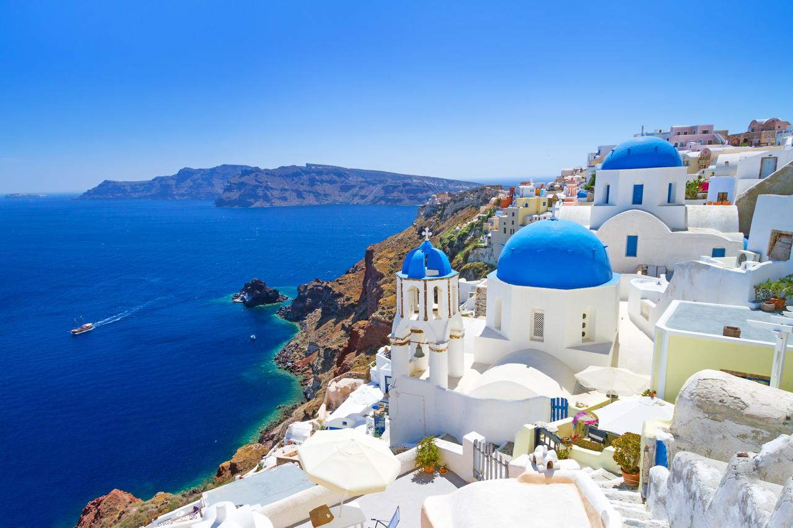

Europa Histórica
Caminhe por ruas centenárias, encante-se com a arquitetura neoclássica e explore o berço cultural do ocidente de perto.
Tenho Interesse
Caminhe por ruas centenárias, encante-se com a arquitetura neoclássica e explore o berço cultural do ocidente de perto.
Tenho Interesse
Desconecte-se da rotina estressante das grandes cidades e venha relaxar à beira-mar sob águas mornas e transparentes.
Tenho Interesse
Explore as deslumbrantes vilas de Santorini, contemple o pôr do sol mais famoso do mundo e navegue pelas águas azuis do Mar Egeu.
Tenho Interesse